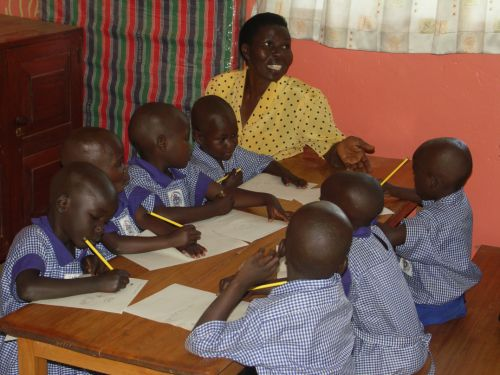
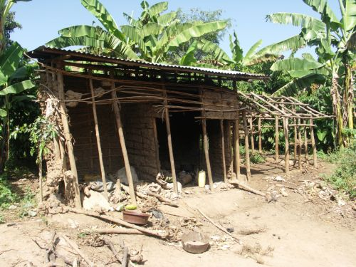
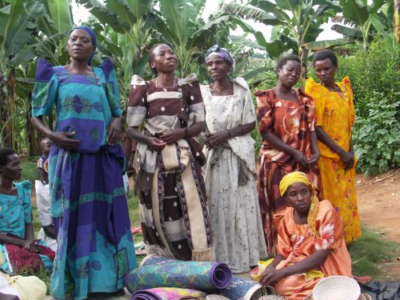

Mei 2007
Bram Moolenaar, penningmeester van ICCF Holland, bezocht het Kibaale Children's Centre in mei 2007. Dit zijn fotos die toen gemaakt zijn.
Er zijn nog meer foto's te vinden op Picasa.
|

|
Kinderen schrijven een brief en maken een tekening voor hun sponsor.
Rose helpt ze om er wat leuks van te maken.
We proberen dit drie keer per jaar te doen.
|

|
In de wachtruimte van de kliniek hangen veel posters om de patienten duidelijk
te maken wat AIDS is en hoe HIV wordt overgedragen. Helaas zijn er veel die
niet kunnen lezen. Daarom wordt er door iemand van het personeel elke dag ook
mondeling uitleg gegeven.
|

|
Een nieuw gebouw met twee grote praktijk lokalen. Een voor scheikunde en een
voor natuurkunde.
De leraren hebben met elkaar het terrein tussen de gebouwen opgeknapt en bomen
geplant. Over een paar jaar kunnen de leerlingen in de schaduw zitten.
|

|
Het lokaal wat voorheen voor scheikunde werd gebruikt is nu voor tekenen en
handvaardigheid.
Een muur hangt vol met prachtige potlood schetsen van leerlingen.
|

|
Eind vorig jaar hebben we de sponsors gevraagd om iets extras te geven, zodat
we voor hun sponsorkind een sweater konden kopen.
Dat was een groot success. Doordat veel mensen extra gaven hebben nu ook
de niet gesponsrde kinderen een sweater. Kibaale ziet blauw!
|
|

|
De families die we helpen zijn arm. Vaak hebben ze geen geld om het huis te
onderhouden. Dit is een keuken die in de loop van de jaren steeds verder is
afgebrokkeld.
|

|
Gelukkig is er zo nu en dan een vrijgevige sponsor. Zonder een extra donatie
zou dit gezin in de open lucht moeten koken.
|
|

|
Er is een nieuwe medewerkster voor "community development".
Een van de dingen waar ze aan werkt is het opzetten van vrouwengroepen.
Dit gaat op een redelijk formele manier. Ze leggen geld bij elkaar of vragen
een lening. Hiermee wordt iets gedaan om geld te verdienen. Een groep heeft
een stuk land gehuurd en verbouwd bonen, een ander kocht stof en maakt
kleding. Het blijkt heel goed te werken. Een groep staat veel sterker als de
vrouwen alleen.
|

|
Al tien jaar wilde ik de beroemde en zeldzame berg gorilla's zien.
Deze keer had ik eindelijk de kans hiervoor.
De silverback in de foto is Guhonda.
Hij is de grootste gorilla in de omgeving, ongeveer 220 Kg.
We hadden veel geluk en zagen de groep van acht gorilla's op een open veldje.
Het was ontzettend leuk om de baby (ca. 1 1/2 jaar oud) te zien spelen.
Het is opmerkelijk hoe deze groep van giganten ons zo dicht bij laat komen en
ons bijna kompleet negeert.
|
bezoek verslag
top
|


{kind=link}
{kind=link}
{kind=link}